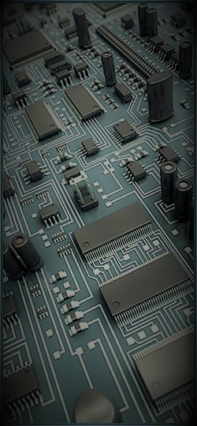

Conor Langan Work Experience
Conor Langan Hobbies & Interests
Home
Work Exp
Education
Hobbies
Contact
2013 – 2016
Ireland & UK Account Manager & Country General Manager,
ASML Ireland & UK ............click for more
Managed team of 70 staff with 6 direct reports.
Revenue in excess of €600M.
Full P&L responsibility.
Managed OpEx budget in excess of €30M.
Delivered high value capital projects on time, within budget & without safety incidents.
Delivered operational KPI’s in high value fast paced hi-tech operations.
Established strong successful strategic business relations and customer intimacy programs.
Negotiated contracts, SoW and performance management of suppliers and contractors.
Developed BKM’s & exchanged learnings and BiC performance with peers worldwide.
Implemented OPEX, Lean, Continuous Improvement and Problem Solving programs.
Developed safety mission, safety manual and implemented safety programs.
Developed talent to reach their potential and established company succession plans.
2010 – 2013
European Service Operations Manager & Country General Manager,
ASML Ireland & UK ............click for more
Managed Team of 140 staff with 10 direct reports.
Managed WW multi-cultural project teams, virtual & face to face.
Negotiated contracts and SoW with suppliers and contractors.
Established Flex Team to support transitory capacity needs at ASML locations WW.
Established GSC responsible for WW technical escalation management.
2007 – 2010
Country General Manager,
ASML Ireland & UK ............click for more
Managed Team of 120 staff with 12 direct reports.
Formulated & managed UK restructure following closure of major UK customer facility.
Developed European Safety Statement & Safety Manuals for Ireland & UK.
Coached and developed engineering and management high potential staff.
2001 – 2007
Country General Manager,
ASML Ireland ............click for more
Developed quality & reliability roadmap - equipment, process and customer experience
Embedded Continuous Improvement & Lean culture at ASML Ireland.
Statutory Director for ASML Ireland Ltd (continued until Dec’16).
Worked with product marketing to turn customer requirements into commercial products.
1995 – 2001
Site Manager Intel Ireland
Silicon Valley Group Ireland ............click for more
Managed team of 80 staff with 8 direct reports across 3 business lines. Revenue >€200M.
Managed 3 major installation & start up projects, excess of 150 pcs capital equipment.
Developed performance & reliability program implemented at WW Intel sites.
Introduced Quality Program and secured ISO 9001 accreditation with NSAI.
1992 – 1995
Lead Customer Support Engineer,
Silicon Valley Group Ireland ............click for more
8 directs reports working 24/7 shift cycle
Point of contact for customer shift manager for all SVG issues
Pentium processor technology transfer on SVG Tracks from Intel US to Ireland
Generated training material and work processes for junior staff
Trouble equipment and process issues on SVG Equipment
Member of the Emergency Response Team
1992 – 1995
Lead Customer Support Engineer,
Silicon Valley Group Ireland ............click for more
Responsible for after sales escalations on POS equipment at leading retailers in Ireland & UK
Travelled to customer sites to develop customised configuration of new systems
Supported FSE escalation via phone and dispatch at times of critical customer impact
Trained FSE's on products maintenance and general troubleshooting